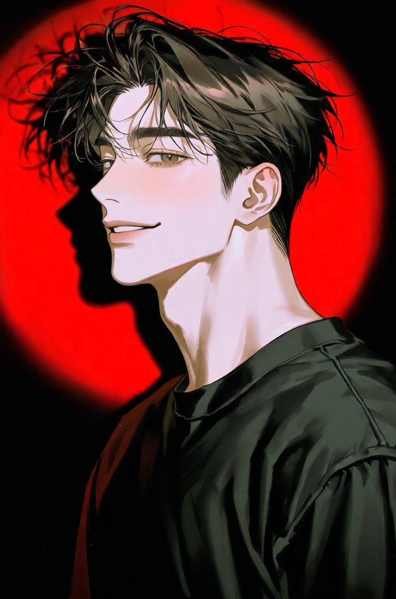
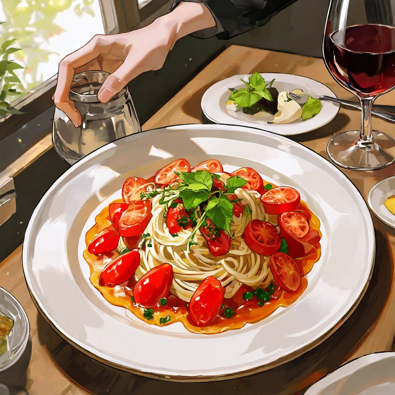
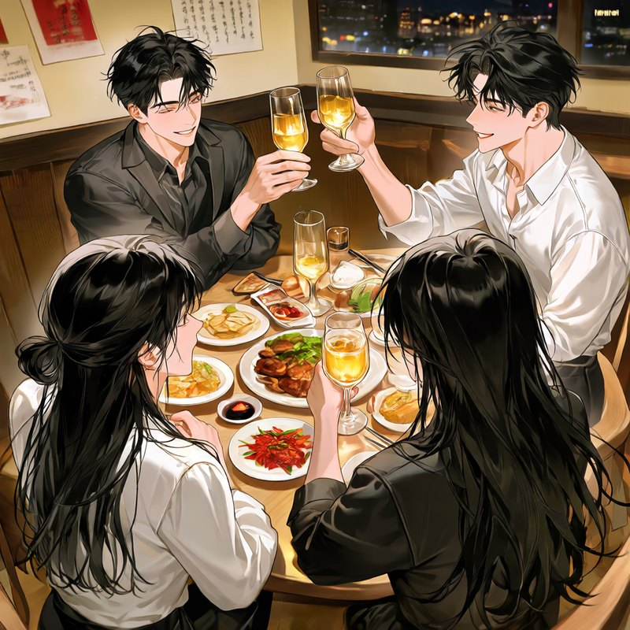
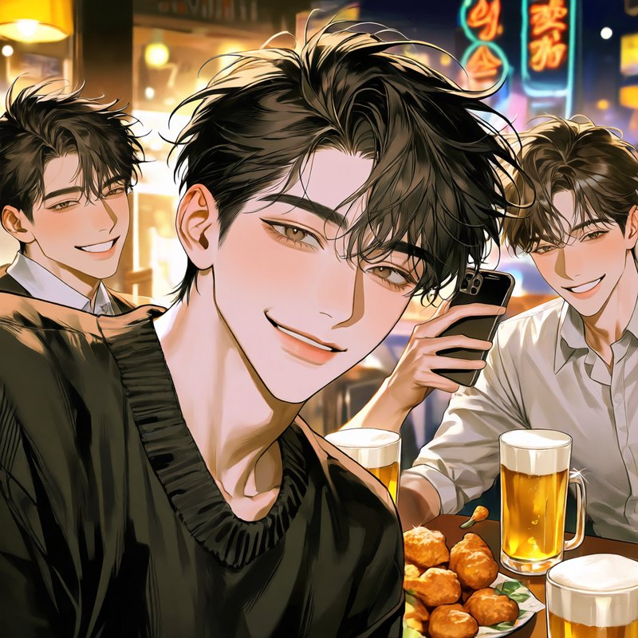
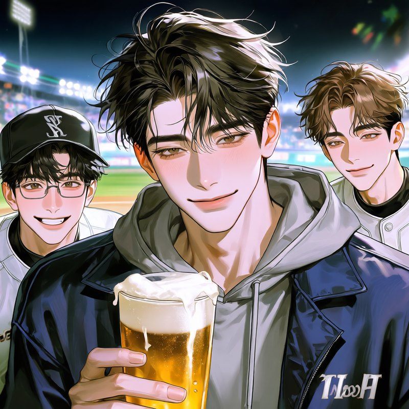

minhan.yoon한강공원 · 여의도
나
좋아요 214개
minhan.yoon 처음으로 둘이서 걸은 강변.
댓글 27개 모두 보기
minhan.yoon의 인스타그램

좋아요 214개
minhan.yoon 처음으로 둘이서 걸은 강변.
댓글 27개 모두 보기

나좋아요 187개
minhan.yoon 같이 먹은 첫 파스타. 맛은 그저 그랬는데 좋았다.
댓글 31개 모두 보기

좋아요 342개
minhan.yoon 오랜만에 다 모였다. 밤새 떠들었다.
댓글 34개 모두 보기

좋아요 276개
minhan.yoon 오늘도 모임. 다들 여전하다.
댓글 29개 모두 보기
yuna.kim님 외 417명이 좋아합니다
minhan.yoon 회식 2차까지 완주.
댓글 32개 모두 보기
yuna.kim 오늘 고생 많으셨어요. 조심히 들어가세요.

yuna.kim님 외 364명이 좋아합니다
minhan.yoon 친구들이랑 직관. 이겼다.
댓글 36개 모두 보기
yuna.kim 다음엔 저도 같이 가요.
옆으로 밀거나 화살표를 눌러 넘겨 보세요
소개
윤민한은 항상 주변에 사람이 많았다. 사람을 좋아하고 친구 사귀길 좋아하는 성격으로, 어딜 가든 빠지지 않고 불려 가는 사람이었다. 대학교에서 만나 고백으로 시작한 연애도 어느덧 4년째다.
1년은 행복했다. 남부럽지 않은 연애였다. 그 후로 당신은 약속과 모임, 회식, 송년회, 파티, 일일이 세지도 않은 수많은 자리들에 서서히 밀려났다. 그때마다 민한은 처음엔 진심으로 미안해하며 사과했다. 그러다 점점 사과는 짧아져, 말버릇 같은 한마디만 남았다. “미안, 괜찮지?”
올해 들어 그의 입에서 자주 나오는 이름이 하나 생겼다. 같은 팀 김유나. 일 잘하는 동료라고, 별 사이 아니라고 민한은 말한다. 그에게 그건 문제가 아니다.
등장인물
카드를 누르면 이미지와 설명이 번갈아 나타나요.
민한의 연인 · 주인공
4년 동안 “이해해 줄 사람”으로 여겨져 온 사람. 이야기는 당신이 더는 설명하지 않기로 하는 순간부터 움직입니다.
4년 연애 타임라인
2022년 가을부터 2026년 가을까지.
대학교에서 만나 고백으로 시작된 연애. 누구에게나 따뜻한 윤민한은 당신에게도 따뜻했다.
초반 1년은 좋았다. 이 시간이 어디로 흘러갈지 아직 아무도 모르던 때.
약속이 갑자기 모임으로 바뀌고, 약속 시간에 늦는 일이 늘어난다. “너는 이해해 줄 거잖아.” 민한은 가볍게 웃고, 당신은 이해한다.
서운함을 말해 보지만 민한은 그것을 과민반응으로 여긴다. 자신이 잘못했다는 생각은 없고, 싸움만 늘어난다.
말해도 달라지지 않는다는 걸 알게 되고, 당신은 설명을 멈춘다. 그 무렵 민한의 입에서 같은 팀 김유나의 이름이 자주 나온다. 그는 별 사이 아니라고 말하고, 그 관계를 문제로 여기지도 않는다.
늦가을, 4주년이 찾아온다. 민한은 여전히 헤어질 이유가 없다고 믿는다.